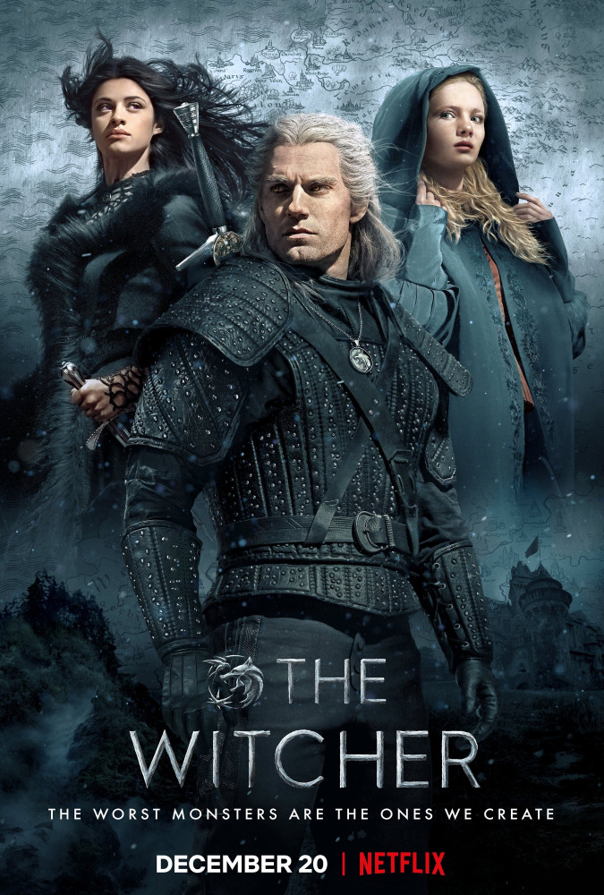
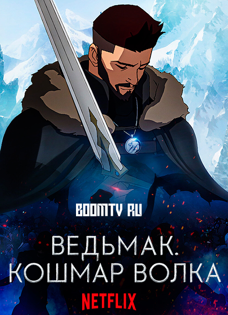

- Главная
- Книги и рассказы
- Компьютерные игры
- Фильмы и сериалы
Фильмы и сериалы

Ведьмак 2002
Оригинальное название: Wiedźmin
Год выпуска: 22 сентября 2002 — 15 декабря 2002
Жанр: Фэнтэзи, сериал
Режиссёр: Марек Бродский
Сценарий: Михал Шжебич
Производство: Heritage Films, Польша
Продолжительность: 13 серий по 45 минут
Ведьмак (сериал) (ориг. Wiedźmin) — польский телесериал, состоящий из 13 серий, являющийся экранизацией сборников рассказов Анджея Сапковского «Последнее желание» и «Меч Предназначения», входящих в цикл «Ведьмак». В главной роли ведьмака Геральта снялся Михал Жебровский. Сериал был выпущен в 2002 году.
Ещё до первого показа сериал был выпущен в виде 130-минутного телефильма, представляющего собой сокращённую версию сериала.

Ведьмак 2019
«Ведьмак» (ориг. The Witcher) — американо-польский фэнтезийный телесериал, снятый по мотивам одноименной серии романов Анджея Сапковского. Премьера первого сезона состоялась на стриминг-сервисе Netflix 20 декабря 2019 года, премьера второго сезона — 17 декабря 2021 года. В сентябре 2021 года был анонсирован третий сезон, позже началась подготовка к съёмкам четвёртого и пятого сезонов. В 2022 году на экраны выйдет приквел шоу — сериал «Ведьмак: Происхождение».

Ведьмак: Кошмар волка 2021
Ведьмак: Кошмар волка (ориг. The Witcher: Nightmare of the Wolf) — двухмерный аниме-фильм от Netflix, рассказывающий о новой серьезной угрозе, которая нависла над Континентом.
Задолго до обучения Геральта Весемир начинает свой путь ведьмака после того, как таинственный Деглан забирает его по Праву неожиданности.